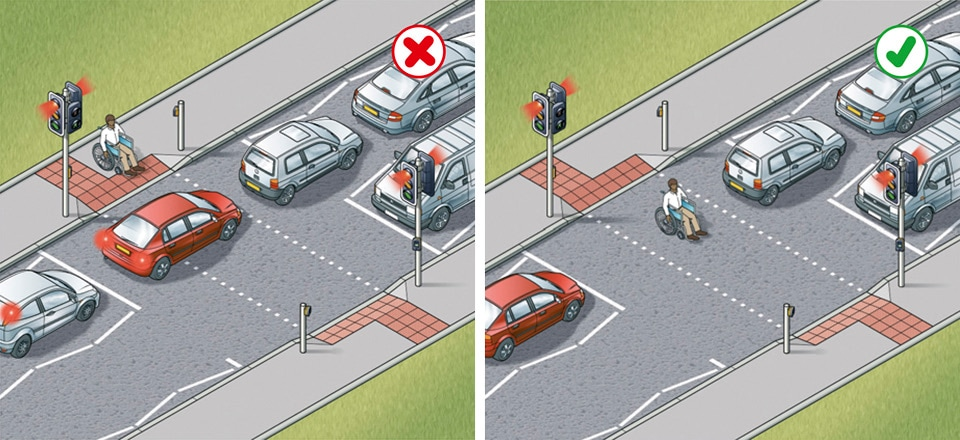
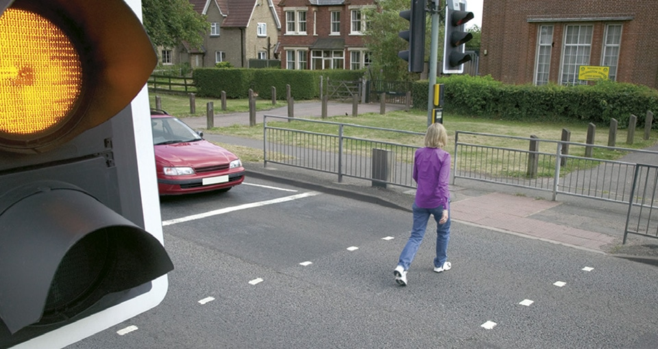

Using the road (159 to 203)
- General rules (159 to 161)
- Overtaking (162 to 169)
- Road junctions (170 to 183)
- Roundabouts (184 to 190)
- Pedestrian crossings (191 to 199)
- Reversing (200 to 203)
5. Pedestrian crossings (191 to 199)
191
You MUST NOT park on a crossing or in the area covered by the zig-zag lines. You MUST NOT overtake the moving vehicle nearest the crossing or the vehicle nearest the crossing which has stopped to give way to pedestrians.
Laws ZPPPCRGD regs 18, 20 & 24, RTRA sect 25(5) & TSRGD regs 10, 27 & 28
192
In slow-moving and queuing traffic you should keep crossings completely clear, as blocking these makes it difficult and dangerous for pedestrians to cross. You should not enter a pedestrian crossing if you are unable to completely clear the crossing. Nor should you block advanced stop lines for cycles.
You MUST NOT park on a crossing or in the area covered by the zig-zag lines. You MUST NOT overtake the moving vehicle nearest the crossing or the vehicle nearest the crossing which has stopped to give way to pedestrians.
Laws ZPPPCRGD regs 18, 20 & 24, RTRA sect 25(5) & TSRGD regs 10, 27 & 28
192
In slow-moving and queuing traffic you should keep crossings completely clear, as blocking these makes it difficult and dangerous for pedestrians to cross. You should not enter a pedestrian crossing if you are unable to completely clear the crossing. Nor should you block advanced stop lines for cycles.

Rule 192: Keep the crossing clear
193
You should take extra care where the view of either side of the crossing is blocked by queuing traffic or incorrectly parked vehicles. Pedestrians may be crossing between stationary vehicles.
194
Allow pedestrians plenty of time to cross and do not harass them by revving your engine or edging forward.
195
Zebra and parallel crossings. As you approach a zebra crossing
Parallel crossings are similar to zebra crossings, but include a cycle route alongside the black and white stripes.
As you approach a parallel crossing
Law ZPPPCRGD reg 25
Signal-controlled crossings
196
Pelican crossings. These are signal-controlled crossings where flashing amber follows the red ‘Stop’ light. You MUST stop when the red light shows. When the amber light is flashing, you MUST give way to any pedestrians on the crossing. If the amber light is flashing and there are no pedestrians on the crossing, you may proceed with caution.
Laws ZPPPCRGD regs 23 & 26 & RTRA sect 25(5)
You should take extra care where the view of either side of the crossing is blocked by queuing traffic or incorrectly parked vehicles. Pedestrians may be crossing between stationary vehicles.
194
Allow pedestrians plenty of time to cross and do not harass them by revving your engine or edging forward.
195
Zebra and parallel crossings. As you approach a zebra crossing
- look out for pedestrians waiting to cross and be ready to slow down or stop to let them cross
- you should give way to pedestrians waiting to cross
- you MUST give way when a pedestrian has moved onto a crossing
- allow more time for stopping on wet or icy roads
- do not wave, flash your lights or use your horn to invite pedestrians across; this could be dangerous if another vehicle is approaching
- be patient, do not sound your horn or rev your engine as this can be intimidating
- be aware of pedestrians approaching from the side of the crossing.
Parallel crossings are similar to zebra crossings, but include a cycle route alongside the black and white stripes.
As you approach a parallel crossing
- look out for pedestrians or cyclists waiting to cross and slow down or stop
- you should give way to pedestrians or cyclists waiting to cross
- you MUST give way when a pedestrian or cyclist has moved onto a crossing
- allow more time for stopping on wet or icy roads
- do not wave, flash your lights or use your horn to invite pedestrians or cyclists across; this could be dangerous if another vehicle is approaching
- be patient, do not sound your horn or rev your engine as this can be intimidating
- be aware of pedestrians or cyclists approaching from the side of the crossing.
Law ZPPPCRGD reg 25
Signal-controlled crossings
196
Pelican crossings. These are signal-controlled crossings where flashing amber follows the red ‘Stop’ light. You MUST stop when the red light shows. When the amber light is flashing, you MUST give way to any pedestrians on the crossing. If the amber light is flashing and there are no pedestrians on the crossing, you may proceed with caution.
Laws ZPPPCRGD regs 23 & 26 & RTRA sect 25(5)

Rule 196: Allow pedestrians to cross when the amber light is flashing
197
Pelican crossings which go straight across the road are one crossing, even when there is a central island. You MUST wait for pedestrians who are crossing from the other side of the island.
Laws ZPPPCRGD reg 26 & RTRA sect 25(5)
198
Give way to anyone still crossing after the signal for vehicles has changed to green. This advice applies to all crossings.
199
Toucan, puffin and equestrian crossings. These are similar to pelican crossings, but there is no flashing amber phase; the light sequence for traffic at these three crossings is the same as at traffic lights. If the signal-controlled crossing is not working, proceed with extreme caution. Do not enter the crossing if you are unable to completely clear it, to avoid obstructing pedestrians, cyclists or horse riders.
Pelican crossings which go straight across the road are one crossing, even when there is a central island. You MUST wait for pedestrians who are crossing from the other side of the island.
Laws ZPPPCRGD reg 26 & RTRA sect 25(5)
198
Give way to anyone still crossing after the signal for vehicles has changed to green. This advice applies to all crossings.
199
Toucan, puffin and equestrian crossings. These are similar to pelican crossings, but there is no flashing amber phase; the light sequence for traffic at these three crossings is the same as at traffic lights. If the signal-controlled crossing is not working, proceed with extreme caution. Do not enter the crossing if you are unable to completely clear it, to avoid obstructing pedestrians, cyclists or horse riders.